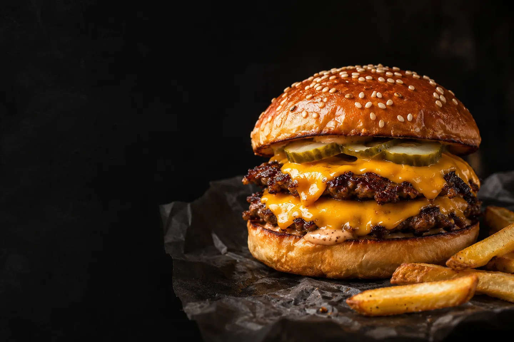

Ir al contenido
FS
Food Store
La carta
Productos
+ Nuevo producto

La
carta
Hamburguesas, pizzas, acompañamientos y bebidas.
Ver menú
↓
Menú completo
Categoría
Todas las categorías
Estamos preparando la carta…
Reintentar
← Anterior
Siguiente →